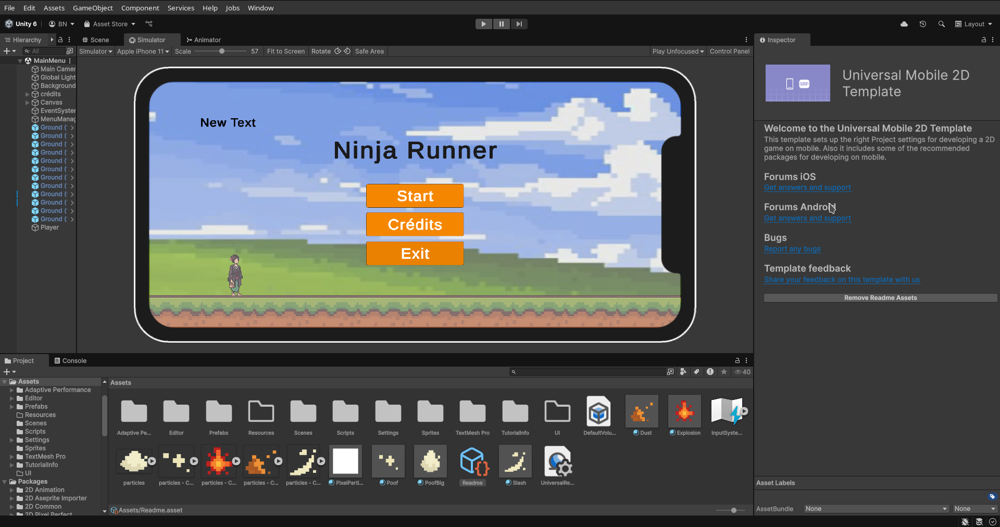
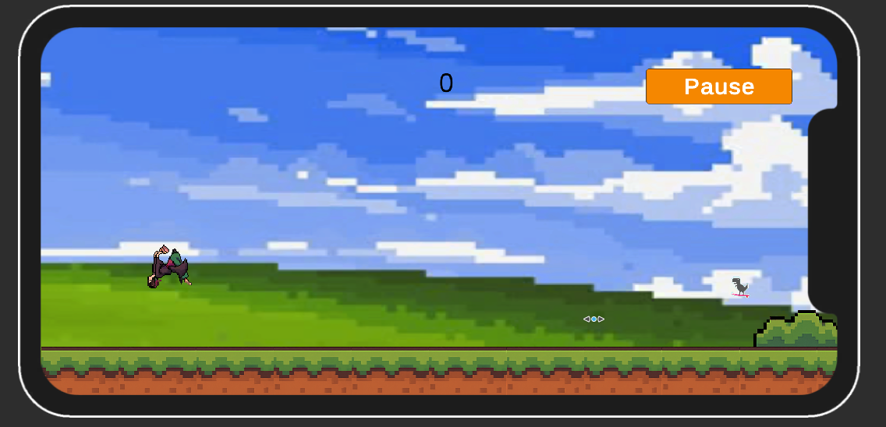
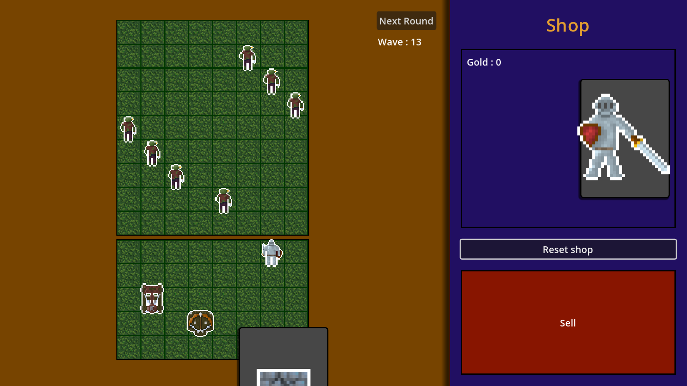

Pour ce jeu-là, je n'ai plus de trace car il a disparu avec le PC sur lequel je l'ai réalisé. Cependant, l'importance réside dans le fait que le jeu en lui-même n'était pas important, c'est plutôt l'histoire qui est intéressante.
Lors de mon stage de 3e j'ai appris que je pouvais apprendre le C sur Internet. Le soir même, je me suis mis à programmer.
J'avais vu que c’était un langage parfait pour commencer, alors j’en ai appris les bases et j’ai tout de suite commencé. Vu les moyens limités dont je disposais, j’ai choisi de réaliser un jeu textuel.
Un narrateur décrivait l’environnement et les actions. Puis le joueur arrivait à des moments de choix où il pouvait sélectionner plusieurs scénarios, et l’histoire évoluait en fonction des décisions prises.
Il y avait un système de checkpoints : si on faisait le mauvais choix et qu’on perdait, on ne revenait pas au début.
Et c’était très mal fait. Le code était moche, non commenté, brouillon — en bref, juste une dizaine de if/else dans tous les sens. Mais c’était totalement fonctionnel et j'en étais fier, c’était un symbole, je me débrouillais toujours pour faire ce qui me passionnait le plus — créer des jeux.
Arrivé en BUT lorsque j'ai vraiment commencé à apprendre la programmation, je suis devenu fan du développement web. Non détaché de ma passion pour le jeu vidéo, j'ai réalisé un jeu en html/css/javascript : Aiolia's Journey.
Un projet bien décousu car fait sans beaucoup de ressources. L'html/css venait de mes cours, mais j'ai du apprendre le javascript en autodidacte. Donc à nouveau, le code est brouillon et non commenté car jamais je n'aurai pensé le partager à qui que ce soit, mais je suis content des idées que j'ai pu avoir.
Pour ce qui est du contenu, je vous laisse le découvrir sur mon github : cliquez ici. Mais pour ce qui est des idées qui ont été mises en places avec le js et le css voici une petite liste :
En bref, un tas d'idées qu'il a été difficile de mettre en place mais qui reproduise à la source tout ce que fait un moteur de jeu.
Celui ci est simple et propre, le premier jeu bien fait.
Il est développé avec unity, codé en C# avec un design limité car les assets et les sprites viennent d'internet notamment de itch.io.
Il est jouable sur mobile android et c'est un endless Runner dans lequel des obstacles et des monstres apparaissent, vous devez tuer les monstres avec l'attaque en cliquant à gauche de l'écran et éviter les obstacles avec le saut en cliquant à droite de l'écran.
Le score augmente lorsque vous passez un obstacle ou éliminez un monstre, il y a un menu d'accueil avec votre meilleur score et des crédits et vous pouvez mettre en pause le jeu, puis reprendre ou retourner au menu.
vous pouvez le retrouver en téléchargement sur mon github : cliquez ici.


Un jeu base defender de cartes intéractifs au tour par tour que j'ai créé à l'aide de mon équipe Node. Pour la première fois j'avais des gens qui m'aidaient à gérer les sprites, les menus, etc... Tout ça m'a grandement soulagé et m'a permis de me concentrer sur le code. C'est aussi une proposition pour une petite game jam, que l'on souhaitait faire avant l'énorme Scream Jam annuelle pour s'habituer à travailler en équipe. 
Un petit jeu hypercasual que j'ai réalisé pour le fun, c'est un flappy-bird like, il est propre et complet, je l'aime bien.
cliquez ici.